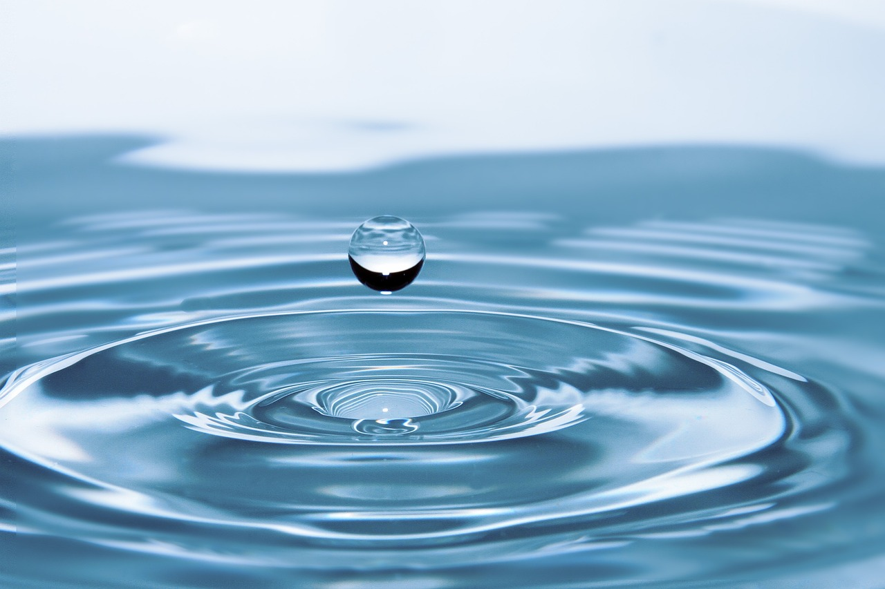
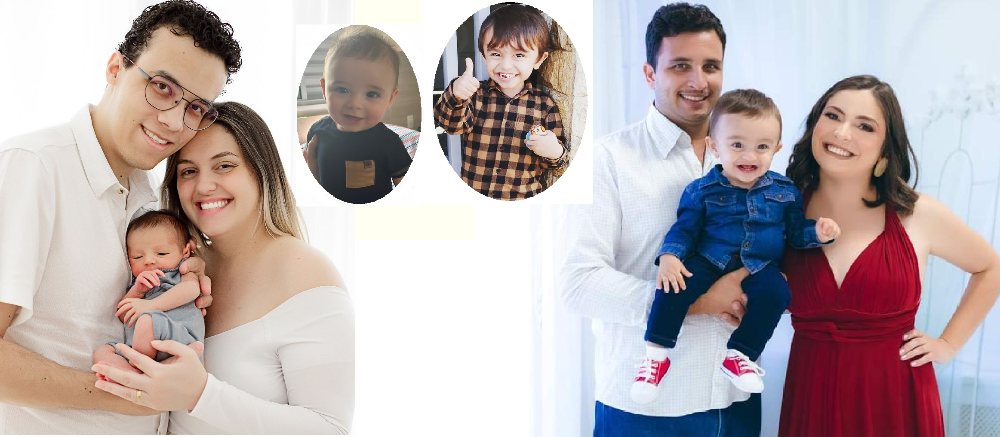
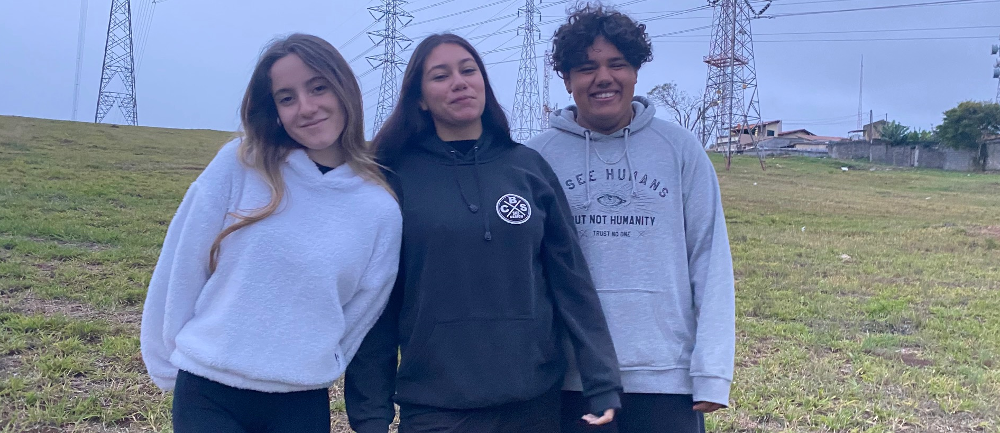
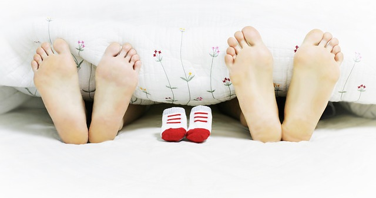
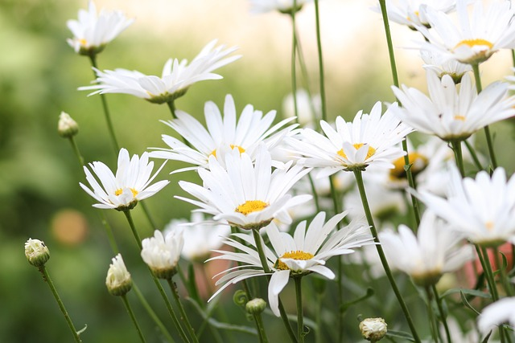

A gestação é um momento especialíssimo que a mulher pode vivenciar. O corpo feminino é “uma máquina perfeita” e incrível, capaz de dar origem a uma nova vida e garantir a ela tudo o que precisa. O útero é um abrigo seguro para esse ser que é totalmente dependente da mãe. Toda mulher tem o direito de ter um ótimo acompanhamento médico que lhe dê condições de dar a luz a uma nova vida e participar do crescimento desse novo ser.
O.D.S.-3.2
Todos devem ter o privilégio de verem seus filhos crescendo, se desenvolvendo e começando a formar sua própria personalidade. Esses pequeninos seres humanos devem ter um ambiente de proteção e acolhimento pra viver bem e feliz, com atividades e brincadeiras tanto no meio familiar como no social.

O.D.S.-3.3
Consta em nossa Constituição o direito fundamental à saúde, porém isso também deve ser alcançado em garantia ampla de qualidade de vida. O acesso a esses bens e serviços devem ser ordenados e organizados; garantindo assim a promoção, a prevenção, a proteção, o tratamento e a recuperação da saúde.

O.D.S.-3.4
A qualidade da saúde mental é determinada pela maneira como cada pessoa lida com as exigências, desafios e mudanças de vida e ao modo como harmoniza suas ideias e emoções. O acesso a esses tipos de serviços deve ser garantido para que a pessoa possa alcançar a recuperação e o bem estar social.

O.D.S.-3.5
A oferta de drogas e álcool estão presentes em nosso meio. É de grande importância trabalhos de prevenção, para que diminua a motivação de serem consumidas. Também é necessário um trabalho de conscientização, que mostre de maneira clara quais são os danos que o abuso dessas substâncias causa; tanto os danos físicos e psicológicos como também os danos sociais que atinge a todos.
O.D.S.-3.6
As campanhas de conscientização no trânsito tende a alertar os motoristas sobre os perigos do trânsito para que assim sejam alcançados comportamentos seguros. Mas, são as pequenas ações do cotidiano que podem fazer a diferença entre a vida e a morte. Depende de cada um dar uma pequena contribuição para alcançar o grande resultado de salvar vidas.

O.D.S.-3.7
É muito importante o acesso às informações sobre a saúde sexual e reprodutiva nos programas nacionais. Devemos estar atentos sobre como passar essas orientações aos mais jovens, respeitando as limitações que cada faixa etária possui. E assim, não colocar em risco a pureza e a inocência da infância.
O.D.S.-3.8
Ainda temos dar um grande passo para atingir um alto nível de acesso à medicamentos, não só aqueles tido como baixo custo, mas principalmente os de alto custo.Todos os esforços nesse sentido são muito importantes.

O.D.S.-3.9
Tão importantes são os produtos que auxiliam nas plantações e indústrias, mas também é de grande importância ações que previnem a exposição indevida, para preservar a saúde humana e ambiental.
 O.D.S.-3
O.D.S.-3